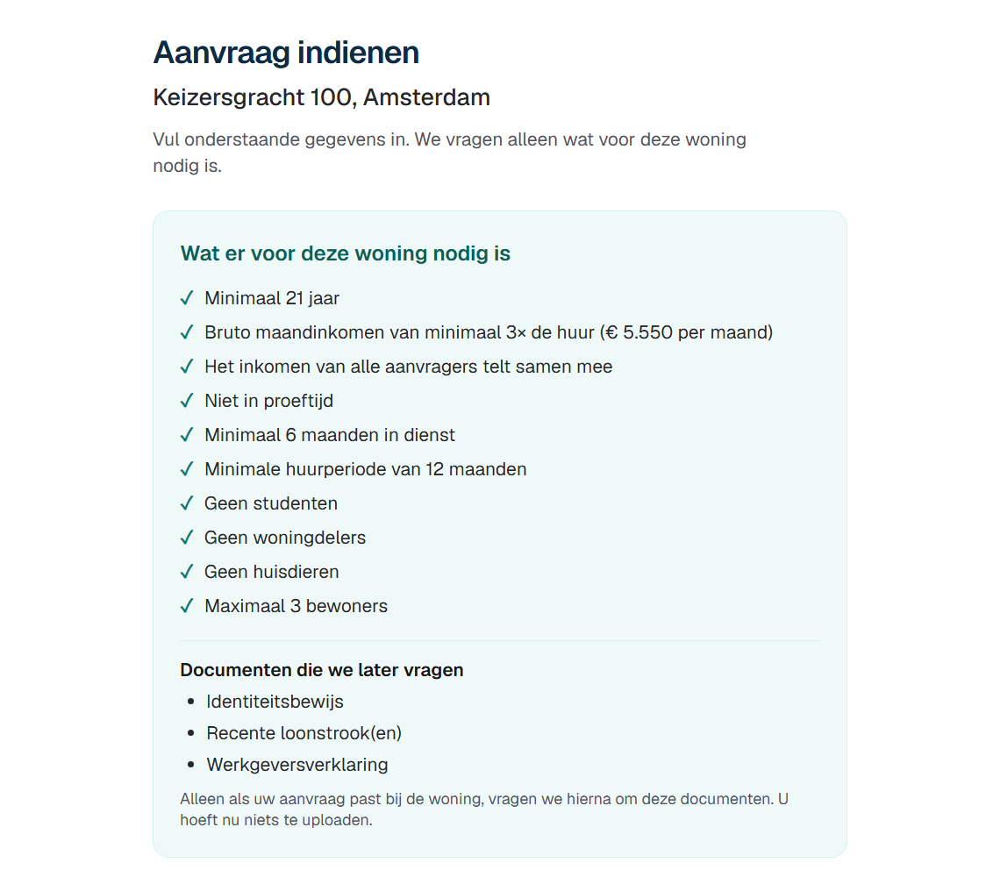
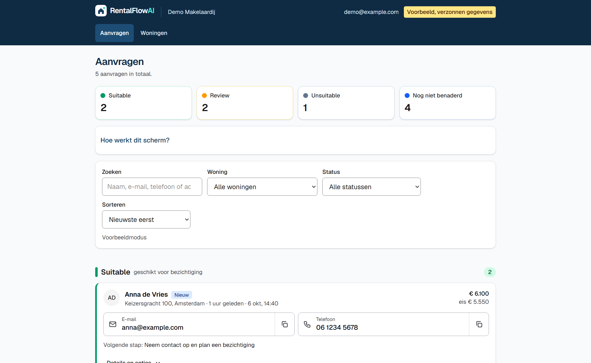
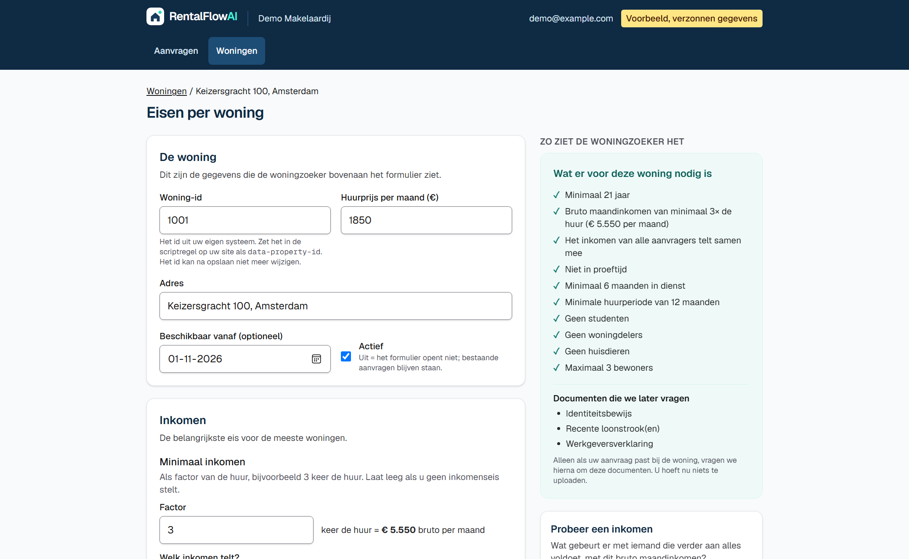

De computer wijst nooit af. U beslist.
RentalFlowAI · Bouke Weerstra · Minor AI
Vraag aan u: hoeveel aanvragen per woning, en hoeveel tijd kost het nalopen?

Alle eisen gehaald. Plan een bezichtiging.
Een punt wilt u zelf bekijken, bijvoorbeeld proeftijd.
Een harde eis niet gehaald. Een indicatie, u kunt de groep altijd wijzigen.
Elke aanvraag blijft zichtbaar, met de redenen erbij. Er wordt nooit automatisch afgewezen.


Bedankt voor uw tijd.